대기환경기사 (2018-03-04 기출문제)
1과목: 대기오염 개론
1. 1시간에 10000대의 차량이 고속도로 위에서 평균시속 80km로 주행하며, 각 차량의 평균 탄화수소 배출률은 0.02g/sec이다. 바람이 고속도로와 측면 수직방향으로 5m/sec로 불고 있다면 도로지반과 같은 높이의 평탄한 지형의 풍하 500m 지점에서의 지상오염농도는? (단, 대기는 중립상태이며 풍하 500m에서의 σz= 15m,
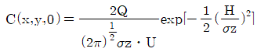
를 이용)- 26.6㎍/m3
- 34.1㎍/m3
- 42.4㎍/m3
- 51.2㎍/m3
(정답률: 47%)

2. 부피가 3500m3이고 환기가 되지 않은 작업장에서 화학반응을 일으키지 않는 오염물질이 분당 60mg씩 배출되고 있다. 작업을 시작하기 전에 측정한 이 물질의 평균농도가 10㎎/m3 이라면 1시간 이후의 작업장의 평균 농도는 얼마인가? (단, 상자모델을 적용하며, 작업시작 전, 후의 온도 및 압력조건은 동일하다.)
- 11.0㎎/m3
- 13.6㎎/m3
- 18.1㎎/m3
- 19.9㎎/m3
(정답률: 56%)
3. 다음 지표면 상태 중 일반적으로 알베도(%)가 가장 큰 것은?
- 삼림
- 사막
- 수면
- 얼음
(정답률: 78%)
4. 정상상태 조건 하에서 단위면적 당 확산되는 조건 하에서 물질의 이동속도는 농도의 기울기에 비례한다는 것과 관련된 법칙은?
- Fick’s law
- Fourier‘s law
- 르샤틀리에 법칙
- Reynold의 법칙
(정답률: 74%)
5. 잠재적인 대기오염물질로 취급되고 있는 물질인 이산화탄소에 관한 설명으로 가장 거리가 먼 것은?
- 지구온실효과에 대한 추정기여도는 CO2가 50%정도로 가장 높다.
- 대기중의 이산화탄소 농도는 북반구의 경우 계절적으로는 보통 겨울에 증가한다.
- 대기중에 배출되는 이산화탄소의 약 5%가 해수에 흡수된다.
- 지구 북반구의 이산화탄소 농도가 상대적으로 높다.
(정답률: 77%)
6. 대기오염 예측의 기본이 되는 난류확산 방정식은 시간에 따른 오염물 농도의 변화를 선형화한 여러 항으로 구성된다. 다음 중 방정식을 선형화 하고자 할 때, 고려해야할 사항으로 가장 거리가 먼 것은?
- 바람에 의한 수평방향 이류항
- 난류에 의한 분산항
- 분자확산에 의한 항
- 복잡한 화학(연소)반응에 의해 변화하는 항
(정답률: 71%)
7. 대기압력이 900mb인 높이에서의 온도가 25℃였다. 온위는 얼마인가? (단, θ=T*(1000/P)^0.288)
- 307.2K
- 377.8K
- 421.4K
- 487.5K
(정답률: 70%)
8. 다음 중 불소화합물의 가장 주된 배출원은?
- 알루미늄공업
- 코크스 연소로
- 냉동공장
- 석유정제
(정답률: 75%)
9. LA스모그를 유발시킨 역전현상으로 가장 적합한 것은?
- 침강역전
- 전선역전
- 접지역전
- 복사역전
(정답률: 77%)
10. 다음 중 일반적으로 대도시의 산성강우 속에 가장 미량으로 존재할 것으로 예상되는 것은? (단, 산성강우는 pH 5.6이하로 본다.)
- SO42-
- K+
- Na+
- F-
(정답률: 60%)
11. 아래 그림은 고도에 따른 풍속과 온도(실선;환경감율, 점선; 건조단열감율)그리고 굴뚝연기의 모양을 나타낸 것이다. 이에 대한 설명과 거리가 먼 것은?
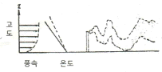
- 대기가 아주 불안정한 경우로 난류가 심하다.
- 날씨가 맑고 태양복사가 강한 계절에 잘 발생하며 수직온도 경사가 과단열적이다.
- 일출과 함께 역전층이 해소되며 하부의 불안정층이 연돌높이를 막 넘었을 때 발생한다.
- 연기가 지면에 도달하는 경우 연돌부근 지표에서 고농도 오염을 야기하기도 하지만 빨리 분산된다.
(정답률: 58%)
12. 대기오염 사건과 대표적인 주 원인물질 또는 전구물질의 연결로 가장 거리가 먼 것은?
- 뮤즈계곡사건-SO2
- 도노라사건-NO2
- 런던스모그 사건-SO2
- 보팔사건 –MIC(Methyl Isocyanate)
(정답률: 76%)
13. 다음 기체 중 비중이 가장 작은 것은?
- NH3
- NO
- H2S
- SO2
(정답률: 77%)
14. 분산모델의 특징에 관한 설명으로 가장 거리가 먼 것은?
- 미래의 대기질을 예측할 수 있으며 시나리오를 작성할 수 있다.
- 점, 선, 면 오염원의 영향을 평가할 수 있다.
- 단기간 분석시 문제가 될 수 있고, 새로운 오염원이 지역내 신설될 때 매번 재평가하여야 한다.
- 지형, 기상학적 정보 없이도 사용할 수 있다.
(정답률: 67%)
15. 오존의 광화학반응 등에 관한 설명으로 옳지 않은 것은?
- 광화학 반응에 의한 오존생성율을 RO2농도와 관계가 깊다.
- 야간에는 NO2와 반응하여 O3가 생성되며, 일련의 반응에 의해 HNO3가 소멸된다.
- 대기 중 오존의 배경농도는 0.01~0.02ppm 정도이다.
- 고농도 오존은 평균기온 32℃, 풍속 2.5㎧ 이하 및 자외선 강도 0.8mW/cm2 이상일 때 잘 발생되는 경향이 있다.
(정답률: 67%)
16. 대기 중에 배출된 “A”라는 물질은 광분해반응(1차 반응)에 의해 반감기 2hr의 속도로 분해된다. “A”물질이 대기중으로 배출되어 초기 농도의 80%가 분해되는데 소요되는 시간은?
- 약 0.6hr
- 약 2.5hr
- 약 3.1hr
- 약 4.6hr
(정답률: 57%)
17. 호흡을 통해 인체의 폐에 250ppm의 일산화탄소를 포함하는 공기가 흡입되었을 때, 혈액 내 최종포화 COHb는 몇 %인가? (단, 흡입공기 중 O2는 21%,
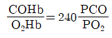
)- 22.2%
- 28.6%
- 33.3%
- 41.2%
(정답률: 35%)
18. 세포 내에서 SH기와 결합하여 헴(heme)합성에 관여하는 효소를 포함한 여러 세포의 효소작용을 방해하며, 적혈구 내의 전해질이 감소되어 적혈구 생존기간이 짧아지고, 심한경우 용혈성 빈혈이 나타나기도 하는 대기오염물질은?
- 카드뮴
- 납
- 수은
- 크롬
(정답률: 80%)
19. 전기자동차의 일반적 특성으로 가장 거리가 먼 것은?
- 엔진소음과 진동이 적다.
- 대형차에 잘 맞으며, 자동차의 수명보다 전지수명이 길다.
- 친환경 자동차에 해당한다.
- 충전 시간이 오래 걸리는 편이다.
(정답률: 82%)
20. 대기의 안정도 조건에 관한 설명으로 옳지 않은 것은?
- 과단열적 조건은 환경감율이 건조단열감율보다 클 때를 말한다.
- 중립적 조건은 환경감율과 건조단열감율이 같을 때를 말한다.
- 미단열적 조건은 건조단열감율이 환경감율보다 작을 때를 말하며, 이 때의 대기는 아주 안정하다.
- 등온 조건은 기온감율이 없는 대기상태이므로 공기의 상하 혼합이 잘 이루어지지 않는다.
(정답률: 64%)
2과목: 연소공학
21. 액체연료의 연소형태와 거리가 먼 것은?
- 액면연소
- 표면연소
- 분무연소
- 증발연소
(정답률: 74%)
22. 기체연료의 특징 및 종류에 관한 설명으로 거리가 먼 것은?
- 부하변동범위가 넓고 연소의 조절이 용이한 편이다.
- 천연가스는 화염전파속도가 크며, 폭발범위가 크므로 1차 공기를 적게 혼합하는 편이 유리하다.
- 액화천연가스는 메탄을 주성분으로 하는 천연가스를 1기압 하에서 –168℃근처에서 천연가스를 냉각, 액화시켜 대량수송 및 저장을 가능하게 한 것이다.
- 액화석유가스는 액체에서 기체로 될 때 증발열(90~100kcal/kg)이 있으므로 사용하는데 유의할 필요가 있다.
(정답률: 56%)
23. 다음 각종 연료성분의 완전연소 시 단위체적당 고위발열량(kcal/Sm3) 크기의 순서로 옳은 것은?
- 일산화탄소＞메탄＞프로판＞부탄
- 메탄＞일산화탄소＞프로판＞부탄
- 프로판＞부탄＞메탄＞일산화탄소
- 부탄＞프로판＞메탄＞일산화탄소
(정답률: 71%)
24. 다음 중 1Sm3의 중량이 2.59kg인 포화탄화수소 연료에 해당하는 것은?
- CH4
- C2H6
- C3H8
- C4H10
(정답률: 63%)
25. 석탄의 물리화학적인 성상에 관한 설명으로 옳은 것은?
- 연료 조성변화에 따른 연소특성으로써 회분은 착화불량과 열손실을, 고정탄소는 발열량 저하 및 연소불량을 초래한다.
- 석탄회분의 용융 시 SiO2, Al2O3등의 산성 산화물량이 많으면 회분의 용융점이 상승한다.
- 석탄을 고온건류하여 코크스를 생산할 때 온도는 250~300℃정도이다.
- 석탄의 휘발분은 매연발생에 영향을 주지 않는다.
(정답률: 56%)
26. 다음 알콜연료 중 에테르, 아세톤, 벤젠 등 많은 유기물질을 용해하며, 무색의 독특한 냄새를 가지고, 모두 8종의 이성질체가 존재하는 것은?
- Ethanol(C2H5OH)
- Propanol(C3H7OH)
- Butanol(C4H9OH)
- Pentanol(C5H11OH)
(정답률: 65%)
27. 부탄가스를 완전연소시키기 위한 공기연료비(Air Fuel Ratio)는? (단, 부피기준)
- 15.23
- 20.15
- 30.95
- 60.46
(정답률: 63%)
28. 메탄 3.0Sm3을 완전연소시킬 때 발생되는 이론 습연소 가스량(Sm3)은?
- 약 25.6
- 약 28.6
- 약 31.6
- 약 34.6
(정답률: 47%)
29. 어떤 화학반응 과정에서 반응물질이 25% 분해하는 데 41.3분 걸린다는 것을 알았다. 이 반응이 1차라고 가정할 때, 속도상수 k는?
- 1.437×10-4 s-1
- 1.232×10-4 s-1
- 1.161×10-4 s-1
- 1.022×10-4 s-1
(정답률: 65%)
30. 다음 중 연소 또는 폐기물 소각공정에서 생성될 수 있는 대기오염물질과 가장 거리가 먼것은?
- 염화수소
- 다이옥신
- 벤조(a)피렌
- 라돈
(정답률: 68%)
31. 다음 조건에 해당되는 액체연료과 가장 가까운 것은?
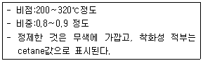
- Naphtha
- Heavy Oil
- Light Oil
- Kerosene
(정답률: 65%)
32. 저위발열량이 5000 kcal/Sm3인 기체연료의 이론연소온도(℃)는 약 얼마인가? (단, 이론 연소가스량 15Sm3/Sm3 연료 연소가스의 평규정압비열 0.35 kcal/Sm3·℃, 기준온도 0℃ 공기는 예열하지 않으며, 연소가스는 해리되지 않는다고 본다. )
- 952
- 994
- 1008
- 1118
(정답률: 62%)
33. 석유의 물리적 성질에 관한 설명으로 옳지 않은 것은?
- 비중이 커지면 화염의 휘도가 커지며 점도도 증가한다.
- 증기압이 높으면 인화점이 높아져서 연소효율이 저하된다.
- 유동점(pouring point)은 일반적으로 응고점보다 2.5℃ 높은 온도를 말한다.
- 점도가 낮아지면 인화점이 낮아지고 연소가 잘 된다.
(정답률: 60%)
34. 주어진 기체연료 1Sm3를 이론적으로 완전연소 시키는데 가장 적은 이론산소량(Sm3)을 필요로 하는 것은?(단, 연소시 모든 조건은 동일하다.)
- Methane
- Hydrogen
- Ethane
- Acetylene
(정답률: 67%)
35. 액체 연료의 연소버너에 관한 다음 설명 중 옳지 않은 것은?
- 유압식 버너의 연료 분무각도는 40°~90°정도이다.
- 고압공기식 버너의 분무각도는 40°~80° 정도이고 유량조절범위는 1:5정도이다.
- 회전식 버너는 유압식 버너에 비해 분무의 입자는 비교적 크고, 유압은 0.5kg/cm2 전후이다.
- 저압공기식 버너는 주로 소형 가열로 등에 이용되고 무화에 사용하는 공기량은 전 이론 공기량의 30~50%정도이다.
(정답률: 75%)
36. 자동차 내연기관에서 휘발유(C8H18; 옥탄)를 연소시킬 때 공기연료비(Air Fuel ratio)는? (단, 완전연소 무게 기준)
- 60
- 40
- 30
- 15
(정답률: 47%)
37. 황함량이 무게비로 2.0%인 액체연료 1L를 연소하여 배출되는 SO2가 표준상태 기준으로 10m3라고 한다면 배출가스 중 SO2농도는 몇 ppm인가? (단, 연료비중은 0.8, 표준상태 기준) (문제 오류로 실제 시험에서는 모두 정답처리 되었습니다. 여기서는 1번을 누르면 정답 처리 됩니다.)
- 140
- 280
- 560
- 1120
(정답률: 59%)
38. 어떤 반응에서 0℃에서의 반응속도상수가 0.001s-1이고 100℃에서의 반응속도상수가 0.⑤s-1일 때 활성화에너지(kJ/mol)는?
- 25
- 33
- 41
- 50
(정답률: 45%)
39. 절충식 방법으로써 연소용 공기의 일부를 미리 기체연료와 혼합하고 나머지 공기는 연소실 내에서 혼합하여 확산연소 시키는 방식으로 소형 또는 중형버너로 널리 사용되며, 기체연료 또는 공기의 분출속도에 의해 생기는 흡인력을 이용하여 공기 또는 연료를 흡인하는 것은?
- 확산연소
- 예혼합연소
- 유동층연소
- 부분예혼합연소
(정답률: 69%)
40. 중유의 중량 성분 분석결과 탄소 82%, 수소 11%, 황 3%, 산소 1.5%, 기타 2.5%라면 이 중유의 완전연소 시 시간당 필요한 이론공기량은?(단, 연료사용량 100L/hr, 연료비중 0.95이며, 표준상태 기준)
- 약 630 Sm3
- 약 720 Sm3
- 약 860 Sm3
- 약 980 Sm3
(정답률: 48%)
3과목: 대기오염 방지기술
41. 유해가스 종류별 처리제 및 그 생성물과의 연결로 옳지 않은 것은? (순서대로 유해가스-처리제-생성물)
- SiF4-H2O-SiO2
- F2-NaOH-NaF
- HF-Ca(OH)2-CaF2
- Cl2-Ca(OH)2-Ca(ClO3)2
(정답률: 55%)
42. 흡착제의 종류 중 각종 방향족 유기용제, 할로겐화 된 기방족 유기용제, 에스테르류, 알콜류 등의 비극성 유기용제를 흡착하는 데 탁월한 효과가 있는 것은?
- 활성백토
- 실리카겔
- 활성탄
- 활성알루미나
(정답률: 73%)
43. 처리가스량 30000m3/hr, 압력손실 300mmH2O인 집진장치의 송풍기 소요동력은 몇kW가 되겠는가? (단, 송풍기의 효율은 47%)
- 약 38kW
- 약 43kW
- 약 49kW
- 약 52kW
(정답률: 54%)
44. 다음 중 여과집진장치에서 여포를 탈진하는 방법이 아닌 것은?
- 기계적 진동(mechanical shaking)
- 펄스제트(pulse jet)
- 공기역류(reverse air)
- 블로다운(blow down)
(정답률: 66%)
45. 다음 중 가스분산형 흡수장치로만 짝지어진 것은?
- 단탑,기포탑
- 기포탑,충전탑
- 분무탑,단탑
- 분무탑, 충전탑
(정답률: 65%)
46. 유체의 운동을 결정하는 점도(viscosity)에 대한 설명으로 옳은 것은?
- 온도가 증가하면 대개 액체의 점도는 증가한다.
- 액체의 점도는 기체에 비해 아주 크며, 대개 분자량이 증가하면 증가한다.
- 온도가 감소하면 대개 기체의 점도는 증가한다.
- 온도에 따른 액체의 운동점도(kinemetic viscosity)의 변화폭은 절대점도의 경우보다 넓다.
(정답률: 55%)
47. 400ppm의 HCl을 함유하는 배출가스를 처리하기 위해 액가스비가 2L/Sm3인 충전탑을 설계하고자 한다. 이 때 발생되는 폐수를 중화하는 데 필요한 시간당 0.5N NaOH 용액의 양은? (단, 배출가스는 400Sm3/h로 유입되며, HCl은 흡수액인 물에 100% 흡수된다.)
- 9.2L
- 11.4L
- 14.2L
- 18.8L
(정답률: 30%)
48. Co-Ni-Mo을 수소첨가촉매로 하여 250~450℃에서 30~150kg/cm2의 압력을 가하면 S이 H2S, SO2등의 형태로 제거되는 중유탈황법은?
- 직접탈황법
- 흡착탈황법
- 활성탈황법
- 산화탈황법
(정답률: 49%)
49. HF 3000ppm, SiF4 1500ppm 들어있는 가스를 시간당 22400Sm3씩 물에 흡수시켜 규불산을 회수하려고 한다. 이론적으로 회수할 수 있는 규불산의 양은? (단, 흡수율은 100%)
- 67.2Sm3/h
- 1.5kg·mol/h
- 3.0kg·mol/h
- 22.4Sm3/h
(정답률: 33%)
50. 다음은 활성탄의 고온 활성화 재생방법으로 적용될 수 있는 다단로(multi-hearthfurnace)와 회전로(rotary kiln)의 비교표이다. 옳지 않은 것은?
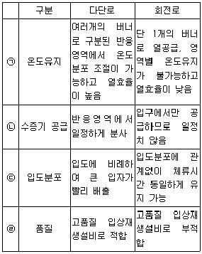
- ㉠
- ㉡
- ㉢
- ㉣
(정답률: 69%)
51. 국소배기장치 중 후드의 설치 및 흡인방법과 거리가 먼 것은?
- 발생원에 최대한 접근시켜 흡인시킨다.
- 주 발생원을 대상으로 하는 국부적 흡인방식이다.
- 흡인속도를 크게 하기 위해 개구면적을 넓게 한다.
- 포착속도(Capture velocity)를 충분히 유지시킨다.
(정답률: 72%)
52. 흡수에 관한 설명으로 옳지 않은 것은?
- 습식세정장치에서 세정흡수효율을 세정수량이 클수록, 가스의 용해도가 클수록, 헨리정수가 클수록 커진다.
- SiF4, HCHO 등은 물에 대한 용해도가 크나, NO, NO2 등은 물에 대한 용해도가 작은편이다.
- 용해도가 작은 기체의 경우에는 헨리의 법칙이 성립한다.
- 헨리정수(atm·m3/kg·mol)값은 온도에 따라 변하며, 온도가 높을수록 그 값이 크다.
(정답률: 45%)
53. 10개의 bag을 사용한 여과집진장치에서 입구먼지농도가 25g/Sm3, 집진율이 98%였다. 가동 중 1개의 bag에 구멍이 열려 전체 처리가스량의 1/5이 그대로 통과하였다면 출구의 먼지농도는? (단, 나머지 bag의 집진율 변화는 없음)
- 3.24g/Sm3
- 4.09g/Sm3
- 4.82g/Sm3
- 5.40g/Sm3
(정답률: 37%)
54. 각종 유해가스 처리법으로 가장 거리가 먼 것은?
- 아크로레인은 NaClO 등의 산화제를 혼입한 가성소다 용액으로 흡수제거 한다.
- CO는 백금계의 촉매를 사용하여 연소시켜 제거한다.
- 이황화탄소는 암모니아를 불어넣는 방법으로 제거한다.
- Br2는 산성수용액에 의한 선정법으로 제거한다.
(정답률: 55%)
55. 습식전기집진장치의 특징에 관한 설명 중 틀린 것은?
- 작은 전기저항에 의해 생기는 먼지의 재비산을 방지할 수 있다.
- 집진면이 청결하여 높은 전계 강도를 얻을 수 있다.
- 건식에 비하여 가스의 처리속도를 2배정도 크게 할 수 있다.
- 고저항의 먼지로 인한 역전리 현상이 일어나기 쉽다.
(정답률: 66%)
56. 다음은 원심송풍기에 관한 설명이다. ( )안에 알맞은 것은?
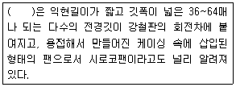
- 레이디얼 팬
- 터어보 팬
- 다익팬
- 익형팬
(정답률: 69%)
57. 먼지의 Stoke’s 직경이 5×10-4cm, 입자의 밀도가 1.8g/cm3일 때 이 분진의 공기역학적 직경(cm)은?
- 7.8×10-4
- 6.7×10-4
- 5.4×10-4
- 2.6×10-4
(정답률: 36%)
58. 전기집진장치의 특성에 관한 설명으로 가장 거리가 먼 것은?
- 전압변동과 같은 조건 변동에 쉽게 적응하기 어렵다.
- 다른 고효율 집진장치에 비해 압력손실(10~20mmH2O)이 적어 소요동력이 적은 편이다.
- 대량가스 및 고온(350℃ 정도)가스의 처리도 가능하다.
- 입자의 하전을 균일하게 하기 위해 장치내부의 처리가스 속도는 보통 7~15m/s를 유지하도록 한다.
(정답률: 43%)
59. 일반적으로 더스트의 체적당 표면적을 비표면적이라 하는데 구형입자의 비표면적의 식을 옳게 나타낸 것은? (단, d는 구형입자의 직경)
- 2/d
- 4/d
- 6/d
- 8/d
(정답률: 73%)
60. 백필터의 먼지부하가 420g/m2에 달할 때 먼지를 탈락시키고자한다. 이 때 탈락시간 간격은?(단, 백필터 유입가스 함진농도는 10g/m3, 여과속도는 7,200cm/hr 이며 먼지를 100% 제거한다)
- 25분
- 30분
- 35분
- 40분
(정답률: 54%)
4과목: 대기오염 공정시험기준(방법)
61. 대기오염공정시험기준 중 환경대기 내의 아황산가스 측정방법으로 옳지 않은 것은?
- 적외선 형광법
- 용액전도율법
- 불꽃광도법
- 자외선형광법
(정답률: 54%)
62. 휘발성 유기화합물질(VOCs) 누출확인방법에 관한 설명으로 거리가 먼 것은?
- 검출불가능 누출농도는 누출원에서 VOCs가 대기중으로 누출되지 않는다고 판단되는 농도로서 국지적 VOCs 배경농도의 최고농도값이다.
- 휴대용 측정기기를 사용하여 개별 누출원으로부터의 직접적인 누출량을 측정한다.
- 누출농도는 VOCs가 누출되는 누출원 표면에서의 표면에서의 농도로서 대조화합물을 기초로 한 기기이 측정값이다.
- 응답시간은 VOCs가 시료채취로 들어가 농도변화를 일으키기 시작하여 기기계기판의 최종값이 90%를 나타내는데 걸리는 시간이다.
(정답률: 52%)
63. 다음 설명은 대기오염공정기시험기준 총칙의 설명이다. ( ）안에 들어갈 단어로 가장 적합하게 나열된 것은? (순서대로 ㉠, ㉡, ㉢)
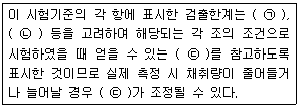
- 반복성, 정밀성, 바탕치
- 재현성, 안정성, 한계치
- 회복성, 정량성, 오차
- 재생성, 정확성, 바탕치
(정답률: 65%)
64. 굴뚝배출가스 중 황산화물을 아르세나조Ⅲ법으로 측정할 때에 관한 설명으로 옳지 않은 것은?
- 흡수액은 과산화수소수를 사용한다.
- 지시약은 아르세나조Ⅲ를 사용한다.
- 아세트산바륨 용액으로 적정한다.
- 이 시험법은 수산화소듐으로 적정하는 킬레이트 침전법이다.
(정답률: 52%)
65. 다음은 굴뚝배출가스 중의 질소산화물에 대한 아연환원 나프틸에틸렌디아민 분석방법이다. ( )안에 들어갈 말로 올바르게 연결된 것은? (순서대로 ㉠-㉡-㉢)
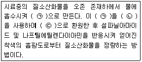
- 아질산이온-분말금속아연-질산이온
- 아질산이온-분말황산아연-질산이온
- 질산이온-분말황산아연-아질산이온
- 질산이온-분말금속아연-아질산이온
(정답률: 58%)
66. 다음 기체크로마토그래피의 장치구성 중 가열장치가 필요한 부분과 그 이유로 가장 적합하게 연결된 것은?
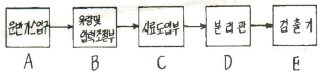
- A,B,C-운반가스 및 시료의 응축을 방지하기 위해
- A,C,D-운반가스의 응축을 방지하고 시료를 기화하기 위해
- C,D,E-시료를 기화시키고 기화된 시료의 응축 및 응결을 방지하기 위해
- B,C,D- 운반가스의 유량의 적절한 조절과 분리관내 충진제의 흡착 및 흡수능을 높이기위해
(정답률: 60%)
67. 굴뚝 내 배출가스 유속을 피토우관으로 측정한 결과 그 동압이 35mmH2O였다면 굴뚝내의 배출유속(m/s)는? (단, 배출가스 온도는 225℃, 공기의 비중량은 1.3kg/Sm3, 피토관 계수는 0.98이다.)
- 28.5
- 30.4
- 32.6
- 35.8
(정답률: 52%)
68. 원자흡수분광광도법에서 원자흡광분석시 스펙트럼의 불꽃중에서 생성되는 목적원소의 원자증기 이외의 물질에 의하여 흡수되는 경우에 일어나는 간섭의 종류는?
- 이온학적 간섭
- 분광학적 간섭
- 물리적 간섭
- 화학적 간섭
(정답률: 63%)
69. 대기오염공정시험기준상 굴뚝배출가스 중 일산화탄소 분석방법으로 옳지 않은 것은?
- 자외선가시선분광법
- 정전위전해법
- 비분산형적외선분석법
- 기체크로마토그래피법
(정답률: 48%)
70. 흡광차분광법(DOAS)으로 측정시 필요한 광원으로 옳은 것은?
- 1800~2850nm 파장을 갖는 Zeus램프
- 200~900nm 파장을 갖는 Zeus램프
- 180~2850nm 파장을 갖는 Xenon 램프
- 200~900nm 파장을 갖는 Hollow cathode 램프
(정답률: 68%)
71. 대기오염공정시험기준상 화학분석 일반사항에 관한 규정 중 옳은 것은?
- 상온은 15~25℃, 실온은 1~35℃, 찬곳은 따로 규정이 없는 한 0~15℃의 곳을 뜻한다.
- 방울수라 함은 20℃에서 정제수 10방울을 떨어뜨릴 때 그 부피가 약 1ml 되는 것을 뜻한다.
- “약”이란 그 무게 또는 부피에 대하여 ±1%이상의 차가 있어서는 안된다.
- 10억분율은 pphm으로 표시하고 따로 표시가 없는 한 기체일때는 용량 대 용량(V/V), 액체일 때는 중량 대 중량(W/W)을 표시한 것을 뜻한다.
(정답률: 63%)
72. 대기오염공정시험기준상 원자흡수분광광도법과 자외선가시선분광법을 동시에 적용할 수 없는 것은?
- 카드뮴화합물
- 니켈화합물
- 페놀화합물
- 구리화합물
(정답률: 61%)
73. 환경대기 중 시료채취위치 선정기준으로 옳지 않은 것은?
- 주위에 건물 등이 밀집되어 있을 때는 건물 바깥 벽으로부터 적어도 1.5m 이상 떨어진 곳에 채취점을 선정한다.
- 시료의 채취높이는 그 부분의 평균오염도를 나타낼 수 있는 곳으로서 가능한 1.5~30m범위로 한다.
- 주위에 장애물이 있을 경우에는 채취위치로부터 장애물까지의 거리가 그 장애물 높이의 1.5배 이상이 되도록 한다.
- 주위에 장애물이 있을 경우에는 채취점과 장애물 상단을 연결하는 직선이 수평선과 이루는 각도가 30°이하 되는 곳을 선정한다.
(정답률: 49%)
74. 굴뚝 배출가스 중 수분의 부피백분율을 측정하기 위하여 흡습관에 배출가스 10L를 흡인하여 유입시킨 결과 흡습관의 중량 증가는 0.82g이었다. 이 때 가스흡인은 건식 가스미터로 측정하여 그 가스미터의 가스 게이지압은 4mmHg이고, 온도는 27℃였다. 그리고 대기압은 760mmHg였다면 이 배출가스 중 수분량(%)은?
- 약 10%
- 약 13%
- 약 16%
- 약 18%
(정답률: 32%)
75. 보통형(I형)흡입노즐을 사용한 굴뚝 배출가스 흡입시 10분간 채취한 흡입가스량(습식가스미터에서 읽은 값)이 60L였다. 이 때 등속흡입이 행해지기 위한 가스미터에 있어서의 등 속흡입유량의 범위로 가장 적합한 것은? (단, 등속흡입정도를 알기 위한 등속흡입계수
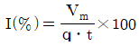
이다.)- 3.34~5.35L/min
- 5.45~6.67L/min
- 6.55~7.32L/min
- 7.52~8.32L/min
(정답률: 54%)
76. 2,4-다이나이트로페닐하이드라진(DNPH)과 반응하여 하이드라존유도체를 생성하게 하여 이를 액체크로마토그래피로 분석하는 물질은?
- 아민류
- 알데하이드류
- 벤젠
- 다이옥신류
(정답률: 51%)
77. 환경대기중의 탄화수소 농도를 측정하기 위한 시험방법 중 주시험법인 것은?
- 총 탄화수소 측정법
- 비메탄 탄화수소 측정법
- 활성 탄화수소 측정법
- 비활성 탄화수소 측정법
(정답률: 62%)
78. 원자흡수분광광도법에서 목적원소에 의한 흡광도 As와 표준원소에 의한 흡광도 AR과의 비를 구하고 As/AR값과 표준물질 농도와의 관계를 그래프에 작성하여 검량선을 만들어 시료중의 목적원소 농도를 구하는 정량법은?
- 표준첨가법
- 내부표준물질법
- 절대검정곡선법
- 검정곡선법
(정답률: 50%)
79. 건식가스미터를 사용하여 굴뚝에서 배출되는 가스상 물질을 시료채취하고자 할 때, 건조시료 가스채취량을 구하기 위해 필요한 항목과 거리가 먼 것은?
- 가스미터의 게이지압
- 가스미터의 온도
- 가스미터로 측정한 흡입가스량
- 가스미터 온도에서의 포화수증기압
(정답률: 61%)
80. A오염물질의 실측농도가 250mg/Sm3이고 이 때 실측산소농도가 3.5%이다. A오염물질의 보정농도 (mg/Sm3)는?(단, A오염물질은 표준산소농도를 적용받으며, 표준산소농도는 4% 이다.)
- 약 219mg/Sm3
- 약 243mg/Sm3
- 약 247mg/Sm3
- 약 286mg/Sm3
(정답률: 52%)
5과목: 대기환경관계법규
81. 대기환경보전법규상 위임업무 보고사항 중 자동차 연료 및 첨가제의 제조·판매 또는 사용에 대한 규제현황의 보고횟수기준은?
- 연 1회
- 연 2회
- 연 4회
- 연 12회
(정답률: 65%)
82. 대기환경보전법령상 비산배출의 저감대상 업종으로 거리가 먼 것은?
- 제1차 금속제조업 중 제강업
- 육상운송 및 파이프라인 운송업 중 파이프라인 운송업
- 의약물질 제조업 중 의약품 제조업
- 창고 및 운송관련 서비스업 중 위험물품 보관업
(정답률: 48%)
83. 대기환경보전법상 환경부령으로 정하는 제조기준에 맞지 아니하게 자동차연료·첨가제 또는 촉매제를 제조한 자에 대한 벌칙기준으로 옳은 것은?
- 7년 이하의 징역이나 1억원 이하의 벌금
- 5년 이하의 징역이나 5천만원 이하의 벌금
- 1년 이하의 징역이나 1천만원 이하의 벌금
- 300만원 이하의 벌금
(정답률: 51%)
84. 대기환경보전법규상 배출허용기준 초과와 관련하여 개선명령을 받은 경우로써 개선하여야 할 사항이 배출시설 또는 방지시설인 경우 사업자가 시·도지사에게 제출하여야 하는 개선계획서에 포함 또는 첨부되어야 하는 사항으로 거리가 먼 것은?
- 배출시설 또는 방지시설의 개선명세서 및 설계도
- 대기오염물질 등의 처리방식 및 처리효율
- 운영기기 진단계획
- 공사기간 및 공사비
(정답률: 46%)
85. 악취방지법상 악취 배출 허용기준 초과와 관련하여 받은 개선명령을 이행하지 아니한자에 대한 벌칙기준으로 옳은 것은?
- 300만원 이하의 벌금에 처한다.
- 500만원 이하의 벌금에 처한다.
- 1000만원 이하의 벌금에 처한다.
- 1년이하의 징역 또는 1천만원 이하의 벌금에 처한다.
(정답률: 58%)
86. 대기환경보전법상 기후·생태계 변화유발물질과 가장 거리가 먼 것은?
- 이산화질소
- 메탄
- 과불화탄소
- 염화불화탄소
(정답률: 51%)
87. 대기환경보전법규상 수도권대기환경청장, 국립환경과학원장 또는 한국환경공단이 설치하는 대기오염 측정망의 종류가 아닌 것은?
- 도시지역의 휘발성유기화합물 등의 농도를 측정하기 위한 광화학대기오염물질측정망
- 기후·생태계변화 유발물질의 농도를 측정하기 위한 지구대기측정망
- 대기 중의 중금속농도를 측정하기 위한 대기중금속측정망
- 대기오염물질의 지역배경농도를 측정하기 위한 교외대기측정망
(정답률: 65%)
88. 대기환경보전법규상 전기만을 동력으로 사용하는 자동차의 1회 충전 주행거리가 80km이상 160km미만인 경우 제 몇 종 자동차에 해당하는가?
- 제 1종
- 제 2종
- 제 3종
- 제 4종
(정답률: 66%)
89. 대기환경보전법상 환경기술인 등의 교육을 받게 하지 아니한 자에 대한 과태료 부과기준은?
- 30만원 이하의 과태료를 부과한다.
- 50만원 이하의 과태료를 부과한다.
- 100만원 이하의 과태료를 부과한다.
- 200만원 이하의 과태료를 부과한다.
(정답률: 62%)
90. 환경정책기본법령상 대기환경기준(1시간 평균치 기준)의 연결로 옳은 것은?(단, ㉠아황산가스(SO2), ㉡이산화질소(NO2)이다.)
- ㉠ 0.⑤ppm 이하 ㉡ 0.06ppm이하
- ㉠ 0.06ppm 이하 ㉡ 0.⑤ppm이하
- ㉠ 0.15ppm 이하 ㉡ 0.10ppm이하
- ㉠ 0.10ppm 이하 ㉡ 0.15ppm이하
(정답률: 49%)
91. 대기환경보전법령상 3종 사업장의 환경기술인의 자격기준에 해당되는 자는?
- 환경기능사
- 1년 이상 대기분야 환경관련업무에 종사한 자
- 2년 이상 대기분야 환경관련업무에 종사한 자
- 피고용인 중에서 임명하는 자
(정답률: 62%)
92. 대기환경보전법령상 배출시설에서 발생하는 연간 대기오염물질 발생량의 합계로 사업장을 분류할 때 다음 중 4종 사업장에 속하는 양은?
- 80톤
- 50톤
- 12톤
- 5톤
(정답률: 60%)
93. 대기환경보전법규상 특정대기유해물질에 해당하지 않는 것은?
- 크롬화합물
- 석면
- 황화수소
- 스틸렌
(정답률: 53%)
94. 대기환경보전법규상 오존의 대기오염경보단계별 오염물질의 농도기준에 관한 설명으로 거리가 먼 것은?
- 경보가 발령된 지역의 기상조건 등을 고려하여 대기자동측정소의 오존농도가 0.12ppm이상 0.3ppm미만인 때에는 주의보로 전환한다.
- 오존농도는 24시간 평균농도를 기준으로 한다.
- 해당지역의 대기자동측정소 오존농도가 1개소라도 경보단계별 발령기준을 초과하면 해당경보를 발령할 수 있다.
- 중대경보단계는 기상조건 등을 고려하여 해당지역의 대기자동측정소의 오존농도가 0.5ppm 이상일 때 발령한다.
(정답률: 57%)
95. 다음은 대기환경보전법규 상 첨가제·촉매제 제조기준에 맞는 제품의 표시방법이다. ( )안에 알맞은 것은?
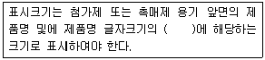
- 100분의 10 이상
- 100분의 15 이상
- 100분의 20 이상
- 100분의 30 이상
(정답률: 63%)
96. 실내공기질 관리법규상 신축 공동주택의 실내 공기질 권고기준으로 옳은 것은?
- 스티렌 360㎍/m3이하
- 폼알데하이드 360㎍/m3이하
- 자일렌 360㎍/m3이하
- 에틸벤젠 360㎍/m3이하
(정답률: 63%)
97. 대기환경보전법령상 초과부과금 산정기준 중 1kg당 부과금액이 가장 적은 것은?
- 염화수소
- 황화수소
- 시안화수소
- 이황화탄소
(정답률: 44%)
98. 대기환경보전법령상 연료의 황 함유량이 1.0%이하인 경우 기본부과금의 농도별 부과계수로 옳은 것은? (단, 연료를 연소하여 황산화물을 배출하는 시설(황산화물의 배출량을 줄이기 위해 방지시설을 설치한 경우와 생산공정상 황산화물의 배출량이 줄어든다고 인정하는 경우는 제외))
- 0.2
- 0.3
- 0.4
- 1.0
(정답률: 53%)
99. 실내공기질 관리법상 용어의 정의로 옳지 않은 것은?
- “공동주택” 이라함은 건축법 규정에 의한 공동주택을 의미한다.
- “다중이용시설”이라 함은 불특정다수인이 이용하는 시설을 말한다.
- “공기정화설비”라 함은 오염된 실내공기를 밖으로 내보내고 신선한 바깥공기를 실내로 끌어들여 실내공간의 공기를 쾌적한 상태로 유지시키는 설비를 말하며, 환기설비와 동일한 의미로 사용되는 것을 말한다.
- “오염물질”이라 함은 실내공간의 공기오염의 원인이 되는 가스와 떠다니는 입자상물질등으로서 환경부령이 정하는 것을 말한다.
(정답률: 63%)
100. 대기환경보전법규상 시멘트수송의 경우 비산먼지 발생을 억제하기 위한 시설 및 필요한 조치기준으로 옳지 않은 것은?
- 적재함 상단으로부터 5cm이하까지 적재물을 수평으로 적재할 것
- 수송차량은 세륜 및 측면살수 후 운행하도록 할 것
- 먼지가 흩날리지 아니하도록 공사장 안의 통행차량은 시속 40km 이하로 운행할 것
- 적재함을 최대한 밀폐할 수 있는 덮개를 설치하여 적재물의 외부에서 보이지 아니할 것
(정답률: 59%)
이때, 지상오염농도는 다음과 같이 계산된다.
지상오염농도 = (발생량 / (2π * σy * σz * u)) * exp(-0.5 * ((y/σy)^2 + (z/σz)^2))
여기서,
- 발생량: 72g
- σy: 0.3 * x^(1/3) (x는 거리, 여기서는 500m)
- σz: 15m
- u: 5m/sec
- y: 0 (지면과의 거리)
- z: 500m
위 식에 대입하면,
지상오염농도 = (72 / (2π * 0.3 * 500^(1/3) * 15 * 5)) * exp(-0.5 * ((0/0.3 * 500^(1/3))^2 + (500/15)^2))
= 26.6㎍/m^3
따라서, 정답은 "26.6㎍/m^3"이다.